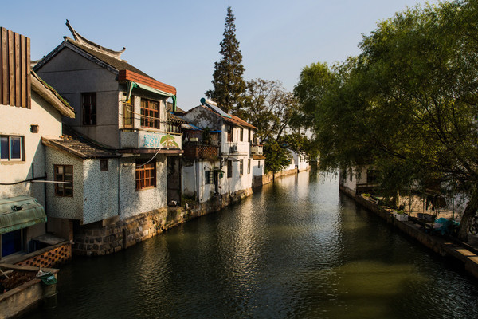
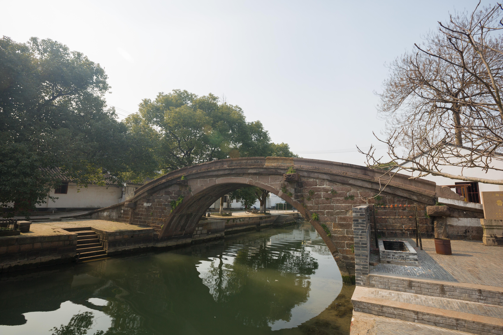

古镇概览
千年水乡，宋元遗韵

历史悠久的水乡明珠
金泽镇位于上海市青浦区西南部，是江、浙、沪三省市交界之处。金泽镇历史悠久，早在公元960年前（宋初）已建镇，有“兴于宋、盛于元”之说。
这里水网密布，河道纵横，是典型的江南水乡。与其他古镇不同，金泽以“桥”闻名，古桥之多、保留之完整，在江南古镇中首屈一指，被誉为“江南第一桥乡”。
古镇内湖荡连通，树木葱郁，环境清幽。这里没有过度的商业喧嚣，更多的是一份淳朴与宁静，是体验原汁原味江南水乡生活的绝佳去处。
地理位置
江浙沪交界，淀山湖畔
交通便利，区位优越
地理位置
上海市青浦区西南部，江浙沪三省市交界处
自驾路线
沪渝高速 → 金泽出口 → 约5分钟即达古镇
公共交通
地铁17号线东方绿舟站 → 转乘公交青金线
开放时间
全天开放，建议游览时间：2-3小时
📌 滑动地图可查看详细位置信息
古桥遗韵
桥桥有庙，庙庙有桥

普济桥 (宋)
建于南宋咸淳三年（1267年），是上海地区最古老的石拱桥。桥体造型优美，石料古朴，见证了近千年的历史变迁。
了解更多 →
万安桥 (宋)
与普济桥并称为"姐妹桥"，同为宋代古桥。桥面雕刻精美，展现了古代工匠精湛的技艺。
了解更多 →
迎祥桥 (元)
元代古桥的杰出代表，桥型轻巧，连续五跨，在江南古桥中极为罕见，具有极高的建筑艺术价值。
了解更多 →
如意桥 (元)
又称祖师桥，位于镇南市梢，为单孔石拱桥，桥拱倒影如满月，意境深远。
了解更多 →
天皇阁桥 (明)
明代建筑风格，三孔石拱桥，桥上刻有吉祥图案，是金泽古桥群的重要组成部分。
了解更多 →
林老桥 (元)
元代至元年间建，单孔石拱桥，桥身藤蔓缠绕，古意盎然。
了解更多 →